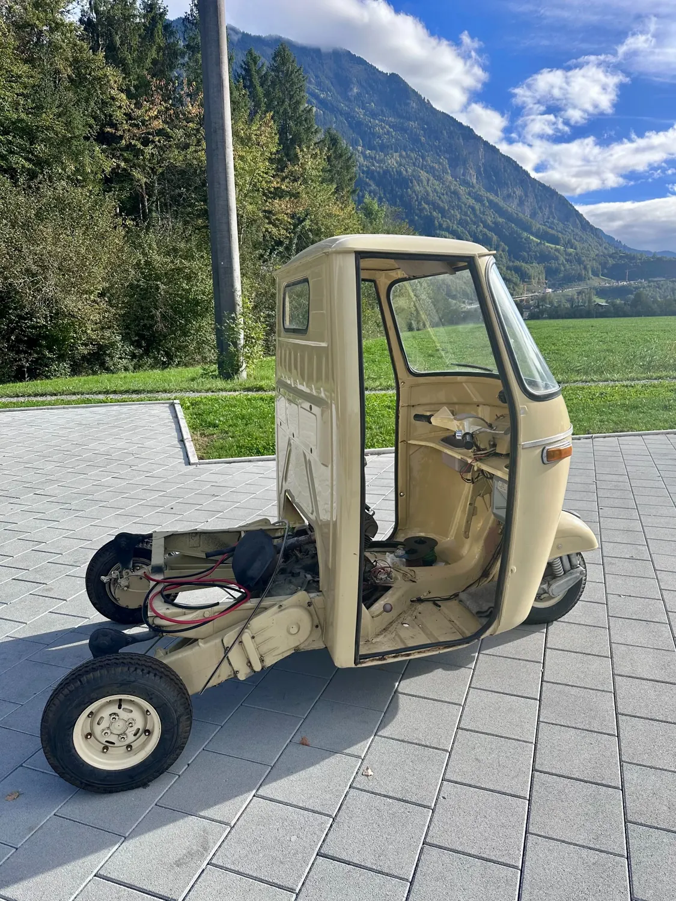
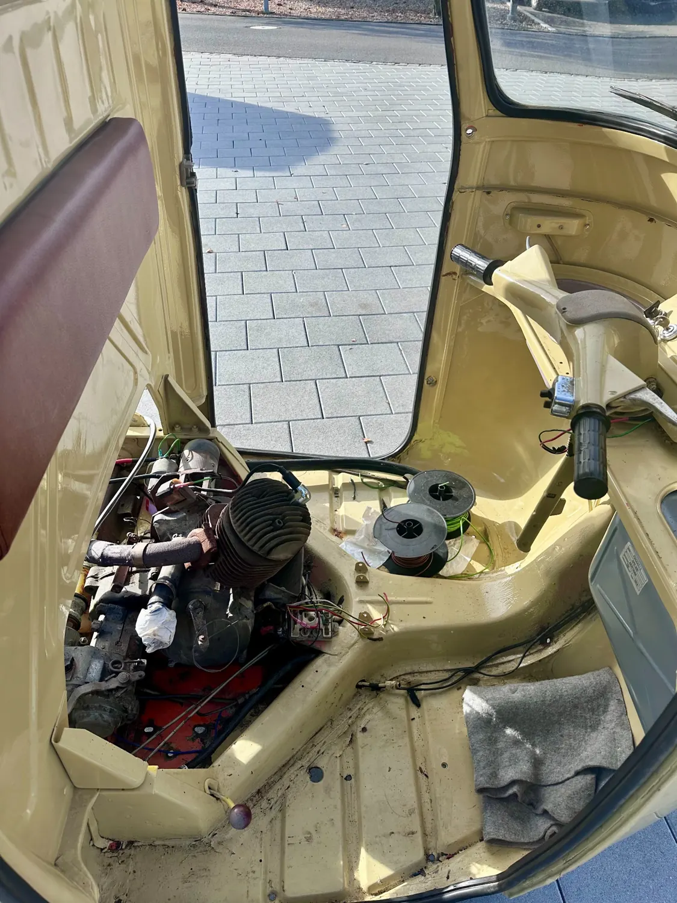

UNSERE APE
Von Sizilien in die Schweiz
Ein italienischer Klassiker auf dem Weg zur mobilen Kaffeebar.
Unsere Piaggio Ape, Baujahr 1974, stammt aus Sizilien. Heute bekommt sie in der Schweiz ein neues Leben. Ihr Umbau zur Kaffee-Ape ist noch im Gang – hier zeigen wir ihren Weg und die Arbeit dahinter.
01 · Italienische Wurzeln
Bevor sie zur piccolo amore wurde, war unsere Ape ein klassischer italienischer Kleintransporter mit Ladefläche. Ihre Herkunft liegt auf Sizilien – ein Stück italienischer Alltagskultur, das wir erhalten möchten.

02 · Die Reise in die Schweiz
Die Ape verliess Italien auf einem Transportfahrzeug und kam in die Schweiz. Damit begann der nächste Abschnitt ihrer Geschichte.

03 · Ein Blick unter die Haube
Für den Umbau wurde die Ladefläche abgenommen. Motor, Fahrgestell und Innenraum sind nun gut zugänglich. Die Bilder zeigen den Zwischenstand der Arbeiten – nicht bereits ein fertiges Fahrzeug.

04 · Die Verwandlung geht weiter
Aus dem kleinen Nutzfahrzeug soll eine mobile Kaffee- und Aperitivo-Bar werden. Noch wird daran gearbeitet. Sobald es Neues gibt, ergänzen wir hier die nächsten Schritte – bis zur ersten Tasse Espresso.

Du möchtest mehr erfahren oder einen Anlass anfragen?
Anfrage senden